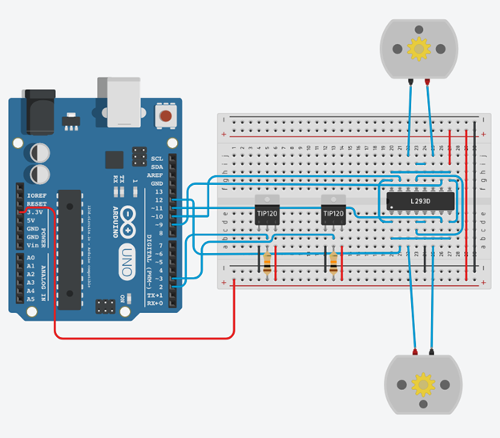

Line Following Robot
Description:
The robot will be following a track with a black line. When the sensor(s) see black, it will turn according to which sensor detected the black line.
The transistor from the previous tutorial, motors/sensors, have been replaced with the L293D motor driver. Like the transistor, the chip boosts the signal from the arduino, however, it can drive two motors at once has and allows the motors to be operated backwards. This function may prove useful when you begin test your robot and it is unable to stay on the line.
Important Notes:
- All pins used in this project are digital
- The qti sensors are not on the breadboard, but they are connected to the breadboard with wires
- The TIP120 sensors should be replaced by QTi Sensors in the breadboard schematic
- The NPN transistors in the schematic should be replaced by QTi sensors (with the emitter replacing W, base replacing R, and the collector replacing B)
Materials:
- 22x Male to male jumper wires
- 2x 10k ohm resistors
- 2x QTi sensor
- 1x Arduino uno
- 1x Breadboard
- 1x L293D chip (motor driver chip)
- 2x geared motors
- 2x 1uF ceramic capacitor
Before Starting:
Solder the 1uF ceramic capacitors to the positive and negative pins of the motor, connecting the positive and negative ends of the motor together. After, solder a set of wires to the pins of the motors.
Also solder wires to the pins of the QTi sensors.
Instructions:
- Take both QTI sensors and connect them to the board (QTI 1:B-C4 & W-C7, QTI 2: B-C13 & W-C15)
- Take a wire and connect one end to Vcc and the other to Pin W on each QTI (QTI 1:Vcc-C7 QTI 2: Vcc-C15)
- Take another wire and connect one end to GND and the other to Pin B on each QTI (QTI 1: GND-C4, QTI 2: GND-C13)
- Take 2 10k Ohm resistors and connect them to Pin R on each QTI and the other end to Vcc (QTI 1:Vcc-A5, QTI 2:Vcc-A14)
- Take 2 wires and connect one end to the digital pin of the arduino and the other end to Pin R on the QTI. Do the same for the second QTI however connect the other wire to Pin 3 (QTI1: Pdig2-B5, QTI2: Pdig3-B15)
- Take the motor driver (L293D) and connect it to the breadboard (Pin1-E20,Pin8-E28,Pin9-F28,Pin16-F20)
- Take a\2 wires and connect one wire to Pin 8 and to Pin 9 (E27-F27). The second wire connects Pins 1 to Pin 16 (D20-G20)
- Take 2 wires and connect one wire from Pin 1 to Pin 8 and the other from Pin 9 to Pin 16 (B20-B27 & H27-H20)
- Take a wire and connect one end from Pin 4 to Pin 13 (C23-G23)
- Take 2 wires, connect one wire from Pin 4 to Pin 5 and the other from Pin 12 to Pin 13 (D23-D24 & I23-I24)
- Take both motors and 4 wires and connect Motor 1 to Pin 3 and Pin 6 and Motor 2 to Pin 11 and Pin 14 (Motor1-A22 & A25,Motor2-J22 & J25). Orientation does not matter of the motor
- Take 2 wires and connect one end from Vcc to Pin 9 and the other wire from GND to Pin 5 (GND-A24, Vcc-I27
- Take a wire and connect Arduino DPin 9 and connect it to Pin 10 on the motor driver (Dpin9-G26)
- Take a wire and connect Arduino DPin 10 and connect it to Pin 15 on the motor driver (Dpin10-G20)
- Take a wire and connect Arduino DPin 11 and connect it to Pin 7 on the motor driver (Dpin11-D26)
- Take a wire and connect Arduino DPin 12 and connect it to Pin 2 on the motor driver (Dpin12-A27)
Schematic/Breadboard diagrams:
Robot Assembly:
Be creative! Try to come up with your own design for your robot. Some ideas include:
- Mounting the motors, sensors, and arduino to a breadboard
- Using recycled materials (i.e. cardboard)
Some things to consider when building your robot include:
- The distance between the QTi sensors
- The weight of the robot
- The addition of a third wheel (so the QTi sensors do not make contact with any surfaces)
- Accessibility to circuit (makes it easier to troubleshoot)
An example of a completed robot:
Demonstration:
Bot Assembly.pdf Previous Tutorial